Next: Multiple optimal solutions Up: Instability and the geometry Previous: The case of linear
Before showing optimization models that exhibit bad behavior,
we first need to understand the geometry behind them. Consider a problem of the form
To understand how changes in the input data affect the feasible region and the optimal solution, consider a small modification: 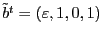, 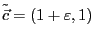, and 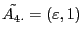. Then our optimization problem would look like
Note that although we changed the right-hand side, this change had no effect in the optimal solution to the problem, but it did change the feasible region by enlarging the bottom part of the feasible area.
Changing the objective vector tilts the corresponding vector in
the graphical representation. This of course also changes the optimal
objective value.
Perturbing a constraint tilts the graphical representation of the constraint.
The change in  changes the primal solution itself.
The amount of tilting constraint undergoes depends on the relative value
of the perturbation. For example, although the constraint 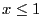 and
the constraint
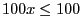 induce the same feasible region, the
perturbation
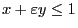 will induce more tilting that
the perturbation
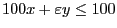.
changes the primal solution itself.
The amount of tilting constraint undergoes depends on the relative value
of the perturbation. For example, although the constraint 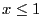 and
the constraint
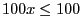 induce the same feasible region, the
perturbation
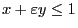 will induce more tilting that
the perturbation
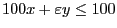.